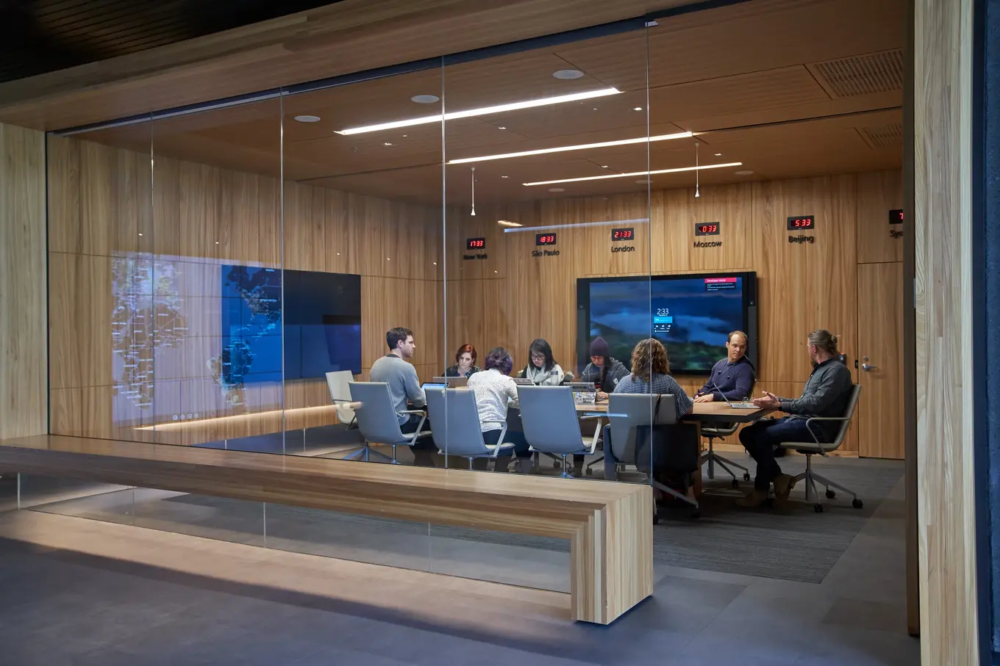
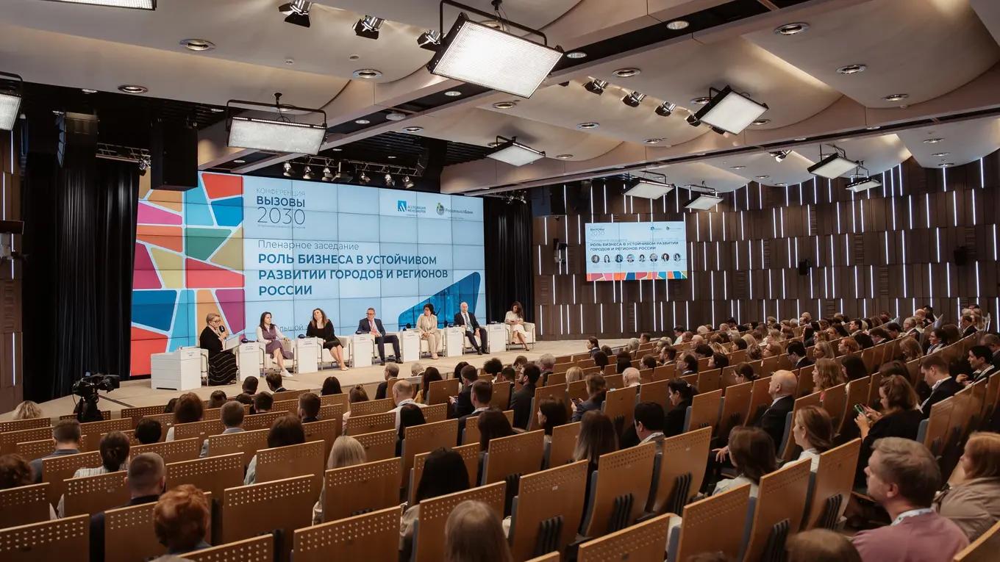
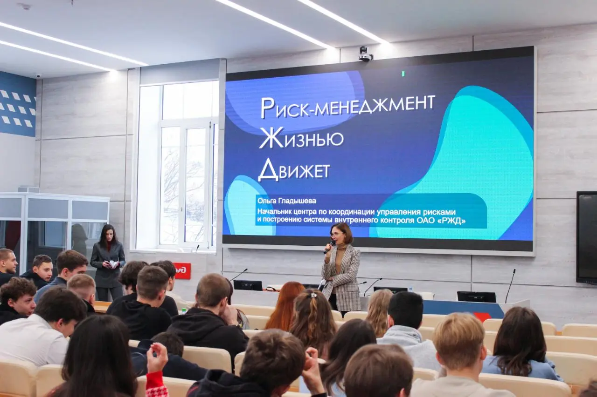
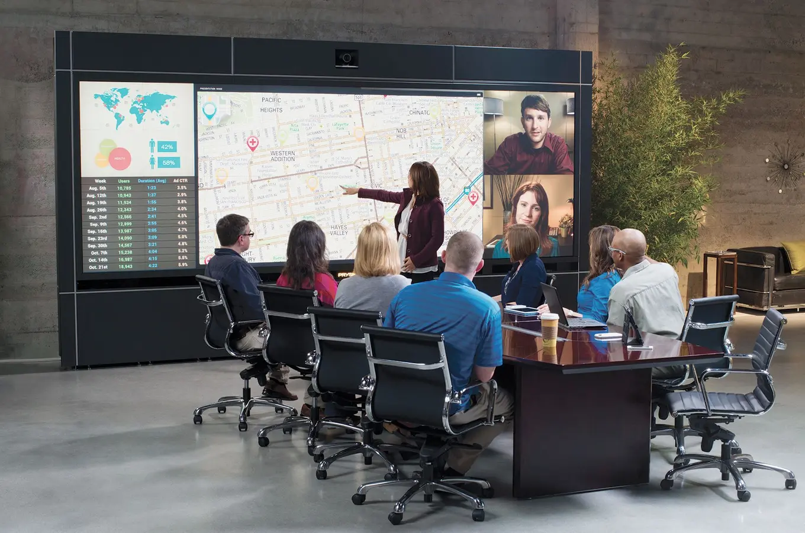
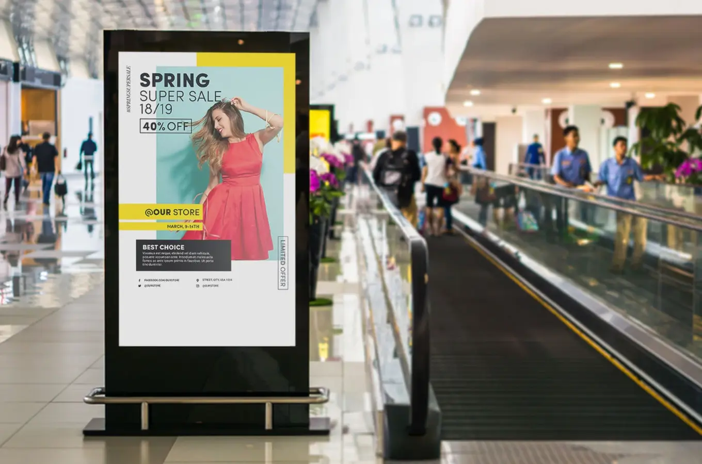
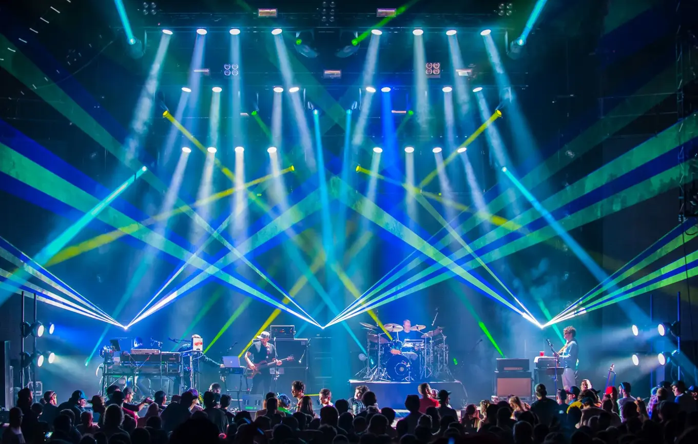
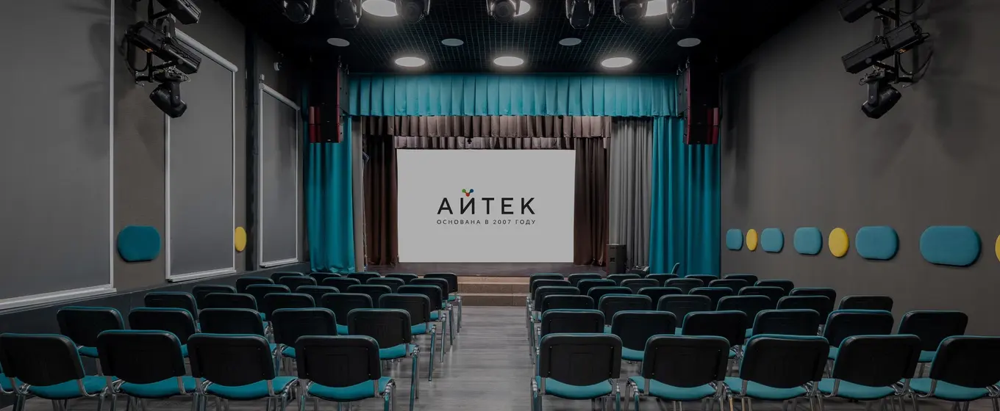

Переговорные комнаты
Это высокотехнологичные пространства для проведения эффективных совещаний, оснащенные комплексом современного мультимедиа оборудования.
Выбрать форматПрофессиональное мультимедиа проектирование с гарантией технологической безупречности от концепции до интеграции.


Это высокотехнологичные пространства для проведения эффективных совещаний, оснащенные комплексом современного мультимедиа оборудования.
Выбрать формат
Представляют собой технологичные пространства для деловых мероприятий, оснащенные профессиональным мультимедийным оборудованием. Здесь устанавливают большие видеостены или LED-экраны, системы видеоконференцсвязи с панорамными камерами, интерактивные трибуны для презентаций, мощные акустические системы с подавлением эха и системы централизованного управления всем оборудованием, обеспечивающие бесперебойную работу мероприятий любого масштаба.
Выбрать формат
Современные пресс-центры оснащаются профессиональным мультимедийным оборудованием для проведения мероприятий. Здесь устанавливают LED-экраны и информационные табло, системы видеотрансляции с телекамерами, мультиформатные коммутаторы сигналов, студийное осветительное оборудование, системы синхронного перевода и интегрированные решения для управления всеми медиапроцессами, обеспечивая оперативную подготовку и трансляцию новостного контента.
Выбрать формат
представляют собой многофункциональные пространства, оснащенные профессиональным мультимедийным оборудованием. Здесь устанавливают сценические LED-экраны или проекционные системы, системы озвучивания с конференц-связью, интерактивные трибуны для выступлений, мощные акустические комплексы с подавлением обратной связи и интегрированные системы управления, обеспечивающие проведение мероприятий различного формата с высоким качеством трансляции.
Выбрать формат
Современные диспетчерские и ситуационные центры оснащаются комплексом профессиональных мультимедийных решений для мониторинга и управления.
Выбрать формат
оснащаются профессиональным мультимедийным оборудованием для эффективного образовательного процесса. Здесь устанавливают проекционные системы с интерактивными видеостенами, системы видеоконференцсвязи для дистанционного обучения, многофункциональные аудиокомплексы с микрофонными системами, интеллектуальное освещение, а также централизованные системы управления, обеспечивающие комфортное проведение занятий любого формата.
Выбрать формат
Профессиональное озвучивание территорий и помещений требует комплексного подхода. Для открытых пространств применяют мощные линейные массивы и рупорные громкоговорители с влагозащитой, способные равномерно покрывать звуком большие площади. В помещениях используют потолочные и настенные акустические системы с точным зонированием, системы фоновой музыки и экстренного оповещения.
Выбрать формат
Системы видеоконференцсвязи (ВКС) представляют собой комплексные решения для дистанционного взаимодействия. Они включают: интеллектуальные камеры с автотрекингом и панорамированием, микрофонные массивы с шумоподавлением, кодеки для обработки потокового видео, интерактивные дисплеи для совместной работы и специализированное ПО (Zoom, Teams, Webex).
Выбрать формат
Digital Signage в широком смысле – это цифровые вывески и информационные панели. Системы Digital Signage управляют отображением цифрового контента на информационных дисплеях. Они позволяют создавать динамичные и интерактивные рекламные или информационные кампании, привлекая внимание аудитории и улучшая коммуникацию с посетителями в таких сферах, как ритейл, гостиничный бизнес и т.д.
Выбрать формат
Этот вид оборудования подразумевает специализированные источники света, предназначенные для создания атмосферы и подсветки на сцене во время концертов, театральных представлений или других мероприятий. Сценическое освещение включает в себя различные типы светильников, лазеры, стробоскопы, цветные фильтры и управляющие системы, позволяющие создавать разнообразные световые эффекты.
Выбрать форматБюджеты и сроки взяты из карточек конкретных объектов.

Апатиты · 60 рабочих дней

Москва · 60 рабочих дней

Подольск · 30 рабочих дней

Москва · 15 рабочих дней

Московская область · 60 рабочих дней

Дагестан · 30 рабочих дней

Москва · 20 рабочих дней

Москва · 60 рабочих дней
Минимальная сумма проекта, за который мы берёмся — 500 000 ₽ Максимальная сумма проекта, который мы реализовали на данный момент — 150 000 000 ₽
На оборудование определяется производителя и осуществляется на основании гарантийных талонов и составляет - до 5 лет. На монтажные работы гарантия составляет - 1 год.
Информация о вашей компании необходима для регистрации проектов у вендоров и получения специальных скидок. Профессиональные вендоры продают оборудование только сертифицированным компаниям, и для этого требуется предоставить данные о вашей организации.
Профессиональные мультимедийные решения предназначены для постоянной, бесперебойной работы в условиях повышенной нагрузки. Они отличаются от бытовых устройств повышенной надежностью, долговечностью, широкими возможностями настройки и управления, а также специальными функциями, необходимыми для решения бизнес-задач. Профессиональные решения имеют более длительную гарантию и обеспечивают более качественное изображение и звук.
Наши сертифицированные проектировщики осуществляют комплексную оценку действующей инфраструктуры, разрабатывая согласованные технические решения для мультимедиа-системе. Мы предоставляем полный цикл услуг: от создания сетевых (ЛВС/СКС) и AV-решений до подбора матричных коммутаторов и встраиваемых контроллеров. Все проекты включают детализацию подсистем, учитывают характеристики электропитания и регламентные требования.
Как профессиональный интегратор, мы комплектуем объекты сертифицированными готовыми комплектами, включающими активные системы с универсальными разъемами, профессиональное видеооборудование с видеопроцессорами, а также центральные процессоры и специализированные стойки для оптимального размещения. Все компоненты подбираются с учетом функциональных требований, бюджета заказчика и особенностей мебели в помещении. Монтажные работы выполняются с соблюдением всех регламентных норм и включают полный цикл наладки оборудования
Мы обеспечиваем комплексное эксплуатационной сопровождение, включающее регулярные профилактические работы, оперативное устранение неисправностей и круглосуточную техническую поддержку. Наши специалисты проводят обучение персонала правилам работы с системой и действиям в нештатных ситуациях. Для корпоративных клиентов доступны специальные партнерские программы с расширенными гарантиями и рекомендациями по обслуживанию. Все выполненные работы фиксируются в системе учета «Сделано» с полной детализацией выполненных операций.
В наших проектах используем исключительно сертифицированное оборудование: Аудиосистемы: Biamp, Bosch и др. Видеооборудование: Samsung, LG, Sony и др. Системы управления: матричные коммутаторы Extron, Crestron и др. Сетевые решения: Cisco (ЛВС/СКС) и др. Оборудование поставляется с официальной гарантией и полным пакетом документации.
Наши специалисты составят подробное техническое задание с учетом всех требований и ограничений, подберут оптимальное оборудование в рамках установленного бюджета и предложат наиболее выгодные условия реализации. Для начала работы достаточно отправить сообщение нашему менеджеру или добавить необходимые позиции в корзину на сайте. Мы оперативно разместим ваш проект в графике работ и обеспечим четкое соблюдение согласованных сроков на всех этапах - от проектирования до ввода системы в эксплуатационной режим.
Выберите задачу для помещения. Она появится в брифе вместе с названием решения.